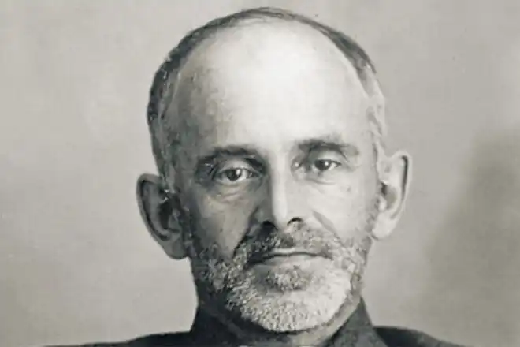

МАНДЕЛЬШТАМ, Осип Емілійович (Мандельштам, Осип Емильевич — 03.01.1891, Варшава — 27.12.1938, пересильний табір на Другій річці (нині Владивосток) — російський поет.
Мандельштам походить із купецької єврейської сім'ї. Батько М., Еміль Веніамінович, замолоду закінчив Берлінську талмудичну школу, а потім став купцем 1-ї гільдії. Мати, Флора Осипівна Вербловська, походила з інтелігентної родини і присвятила своє життя музиці. 1897 р. родина Мандельштамів переїхала у Петербург. З 1899 до 1907 p. Мандельштам навчався у Тенишевському комерційному училищі. Відразу після закінчення училища подав прохання про зарахування вільним слухачем природничого відділення фізико-математичного факультету Петербурзького університету, але вже на початку жовтня того ж 1907 р. забрав документи. Наступний рік Мандельштам провів у Парижі, слухав лекції у Сорбонні, писав прозу і вірші. Зазнав "сильного захоплення Бодлером і особливо Верленом". Разом із родиною відвідав Швейцарію й Італію.
У вересні 1909 p. Мандельштам вступив у Гейдельберзький університет; з 1911 р. зачислений у Петербурзький університет. Того ж року у Виборзі Мандельштам хрещений у єпископсько-методистське віросповідання. З 1914 до 1917 р. проживав у Фінляндії, Варшаві, Петербурзі, Москві, Одесі. З 1918 р. деякий час працював у Комісії з евакуації Петрограда, був співробітником газет "Вечірня зірка" і "Країна". Часто бував у Москві, куди остаточно переїхав у червні того самого року. У лютому 1919 p. Мандельштам переїхав у Харків, де влаштувався у Всеукраїнський літературний комітет при Наркомосвіти України. Виступав з читанням віршів на вечорах, публікував їх у харківських "Відомостях" і "Шляхах творчості". З 1920 p. Мандельштам — у Феодосії, де за підозрою у зв'язках з підпільниками був заарештований білогвардійською контррозвідкою (звільнений зусиллями головним чином полковника О. Цигальського). У Батумі Мандельштам знову був заарештований військовою владою і знову звільнений клопотанням конвоїра Чигуа (епізод описаний у нарисі "Повернення" ("Возвращение"). Того ж 1920 р. Мандельштам повернувся у Москву, звідки неодноразово виїжджав на Кавказ і в Крим. З 1924 р. разом із дружиною замешкав у Ленінграді, а в 1931 р. повернувся у Москву. У травні 1934 р. у квартирі Мандельштама було проведено обшук, після чого поета заарештували. Безпосередньою причиною арешту стала епіграма на Й. Сталіна, яку поет написав роком раніше: "Ми живем і не чуєм країни внизу..." Спочатку поета відправили на заслання у Чердинь (Північний Урал), а пізніше, після приступу душевної хвороби і спроби самогубства, він отримав дозвіл оселитися у Воронежі, де у квітні 1935 р. працював над текстами радіопередач для воронезького радіо, а також був літконсультантом воронезького театру. Наприкінці травня 1937 р. Мандельштам отримав дозвіл виїхати з Воронежа. Йому було заборонено проживати в 12 найбільших містах країни. 2 травня 1938 p. Мандельштама знову заарештували і відправили у концтабір (пересильний табір на Другій річці, нині — Владивосток), вирок — 5 років таборів за контрреволюційну діяльність. Із цього заслання Мандельштам вже не повернувся. Звістку про смерть чоловіка дружина отримала у червні 1942 р. Перші вірші Мандельштама, позначені впливами символізму, були опубліковані 1907 р. в журналі "Пробуджена думка", що видавався у Тенишевському училищі, де навчався поет. Вони сповнені відчуття ілюзорності життя, прагнення відійти у світ музичних вражень. У вірші "Silentium" (у пер. з латини — "тиша") поет вбачає у тиші життя музики та слова, непорушний зв'язок усього живого. Вірш сповнений яскравих і мальовничих образів: шалений ясний день, блідий бузок морської піни, каламутно-лазуровий дзбан, кришталева нота. Символістська програма Мандельштама — поєднати "суворість Тютчева і хлоп'яцтво Верлена", вивищеність і дитячу безпосередність. Наскрізна тема його ранніх віршів — непевність цього світу і людини перед лицем загадкової вічності і долі. Поетична зрілість прийшла до Мандельштама на початку XX ст. У дореволюційний період з'явилися три збірки його віршів під назвою "Камінь" ("Камень", 1913, 1915, 1916). Образ каменя асоціювався для Мандельштама з тим поетичним матеріалом, з якого він зводив "архітектурну форму" своїх віршів. За висловом Мандельштама, зразки поетичного мистецтва для нього — це "архітектурно зумовлене сходження, що відповідає ярусам готичного собору". Теми перших збірок — роздуми про суть і спрямованість власного поетичного "я", про ставлення до світу, війна, історія, побут, численні асоціації та перегуки із загальнокультурними набутками минулих епох:Безсоння. І Гомер. Шатри тугих вітрил. Я список кораблів пройшов до половини:Сей довгий виводок, сей поїзд журавлиний.Що над Елладою вгорі відмайорів...І море, і Гомер — все діється любов'ю.Почути заклик чий? І от Гомер мовчить, А море чорне все витійствує й шумить.І з гуркотом важким лягає в узголов'я.{"Безсоння. І Гомер...", пер. Ю. Буряка)Як зауважувала критика (О. Соколов), уже в перших поетичних збірках Мандельштама прослідковується "прагнення відійти від трагічних бур часу у позачасове", у цивілізації та культури минулих епох. Поет створює свій альтернативний світ із уявлюваної ним історії культури, світ, побудований на суб'єктивних асоціаціях, через які він намагається висловити своє ставлення до сучасності, довільно групуючи факти історії, ідеї, літературні образи ("Домбі і син", "Європа"). Це була своєрідна форма втечі від свого "часу-вовкодава": За розбурхану доблесть майбутніх віків,За високе у душах людськихЯ позбавлений чаші на учті батьківІ спокою, і честі, і втіх.Впав на плечі мені лютий час-вовкодав,Та не вовчий живе в мені дух, Ти запхай мене краще, мов шапку в рукав,У гарячий сибірський кожух.Щоб не бачити бруду, в якому людці:Лиш колеса криваві та гній.Щоб до ранку світились блакитні песціУ прадавній принаді своїй, Вкрий мене в єнісейських ночей глибині,Де сосна до зірок дістає,Бо ж не вовча та кров, що живе у мені,І мене тільки рівний уб'є.("За розбурхану доблесть...", пер. Ю. Андруховича) Від віршів "Каменя" віє самотністю, тугою, "світовим затуманеним болем". Відтоді наскрізною темою творчості Мандельштама стала тема Петербурга. Перші поетичні збірки Мандельштама були високо поціновані критикою і, зокрема, поетичним лідером акмеїзму М. Гумільовим. Саме з акмеїзмом Мандельштама і співвідносить свою тогочасну поетичну манеру, яку А. Ахматова назвала "божественною гармонією": "Я не знаю у світовій поезії схожого факту. Ми знаємо витоки Пушкіна і Блока, але хто скаже, звідки прийшла до нас ця нова божественна гармонія, яку називають поезією Осипа Мандельштама!" Початок революції Мандельштам сприйняв неоднозначно, вона викликала у нього складні асоціації з Французькою революцією, з "декабристським" минулим Росії і навіть із гинучим Єрусалимом. Утім, уже на початку 20-х pp. ставлення поета до тих перемін, які відбувалися у його країні, визначилось цілком чітко. Загибель Гумільова, арешти знайомих він сприйняв як "погреб Петербурга". "У двадцять першому році Мандельштаму стало зрозуміло, що людство, відмовившись від подарунка життя, йде — можливо — фатальним шляхом — у небуття", — писала його дружина Надія Яківна. Тогочасні з:рші М. пронизують есхатологічні мотиви, його лірика і проза сповнені роздумів про трагічність людської історії, пафосом заперечення насильства, піднесеного в ранг державної політики. У пореволюційний період вийшли друком нові поетичні збірки Мандельштама "Tristia" (1922), "Друга книга" ("Вторая книга", 1923), "Вірші"("Стихотворения", 1928), поетичний цикл "Вірменія" ("Армения", 1931) та ін. У 1923 р. він написав знаменитий вірш "Епоха" ("Век"), у якому порівняв сталінську сучасність із жорстоким звіром. Вірші Мандельштама 20-х — поч. 30-х pp. втрачають колишню акмеїстичну чіткість, стають більш ірраціональними, вбирають складні культурно-історичні асоціації, водночас їхній пафос стає похмурішим і песимістичнішим. Мандельштам пророкує катастрофу, загибель старої ("християнсько-гліністичної", за його висловом) культури та її "останніх" носіїв. Мандельштам не сприймає радянську дійсність, почувається "хворим сином віку". Під час заслання у Воронежі поет написав знаменитий поетичний цикл, т. зв. "воронезький зошит". Центральним твором воронезького періоду є поезія "Вірші про невідомого солдата" ("Стихи о неизвестном солдате", 1937), у якій розгорнута апокаліптична картина революційної війни за виживання людства. Цей вірш вважають одним із найзагадковіших творів Мандельштама. Він поєднує реальне і фантастичне, антивоєнний пафос : метафоричне засвоєння теорії А. Ейнштейна, лей М. Ломоносова, В. Хлєбнікова та європейських поетів XX ст. Мандельштам виступав не тільки як поет, а й як перекладач і прозаїк. Він є автором автобіографічної книги "Шум часу" ("Шум времени", 1925), "Єгипетська марка" ("Египетская марка", 1928), статей "Слово і культура" ("Слово и культура"), "Про природу слова" ("О природе слова"), "Гуманізм і сучасність" ("Гуманизм и современность"), "Пшениця людська" ("Пшеница человеческая"), збірок статей "Про поезію" ("О поэзии", 1928), "Четверта проза"("Четвёртая проза"), нарисів "Мандрівка у Вірменію" ("Путешествие в Армению"), надзвичайно глибокого і вдумливого есе "Розмова про Данте" ("Разговор о Данте", 1933), яке тоді залишилось у рукописах; перекладів "Федри" Ж. Расіна (1915), творів старофранцузького епосу (1922). Життя і творчість Мандельштама пов'язані з Україною та її культурою. У ряді творів поета відобразилися українські мотиви, образи, мовний колорит (вірші "Як по вулицях Києва-Вія...", "Старий Крим" , нарис "Київ "та ін.). У березні 1922 р. Мандельштам виступив у Київській філософській академії з лекцією "Акмеїзм чи класицизм?". Опублікував рецензії на вистави у Києві й Одесі театру "Березіль" (1926). Л. Кисельов присвятив Мандельштаму цикл віршів. Українською мовою окремі вірші Мандельштама переклали Д. Павличко, Л. Череватенко, Ю. Буряк, Ю. Андрухович, В. Неборак. В. Назарець